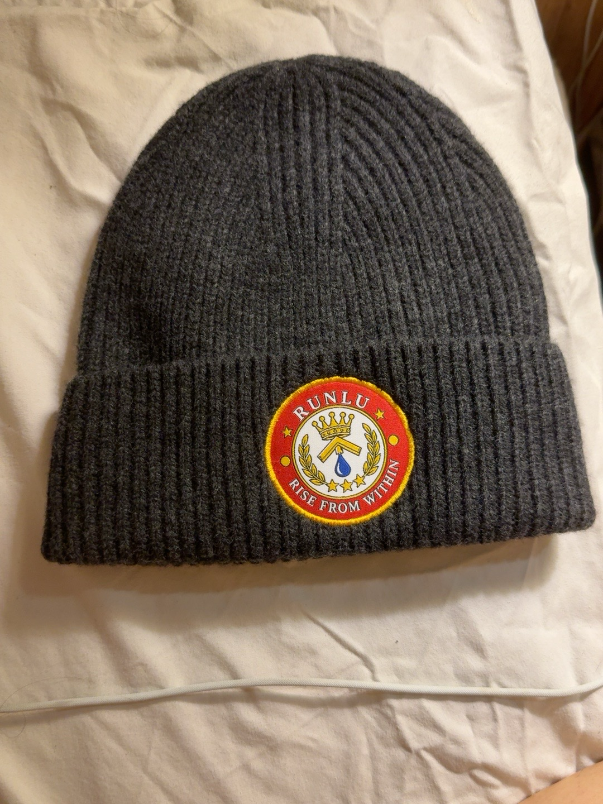

RUNLU CHRONICLE · NOVEMBER 2026
Warmth, Made Tangible.
Five matching charcoal-grey RUNLU knit beanies have arrived. Each carries the circular red-and-gold RUNLU crest, with its blue droplet and the words “RISE FROM WITHIN.”
Designed for personal wear and thoughtful gifts, these winter pieces extend RUNLU’s creative identity into everyday life. The material was ordered as pure wool; the fiber composition has not been independently verified.
This is a record of completed physical pieces, not a sales listing.
把热爱，织进冬天。
五顶统一深灰色的 RUNLU 针织帽已经全部收到。翻边正面佩有红金色圆形润庐徽章，中央保留蓝色水滴与“RISE FROM WITHIN”字样。
这批冬帽主要用于日常佩戴与亲友赠送，让润庐的设计走进真实生活。定制规格为纯羊毛，具体纤维成分尚未独立检测。
这里记录的是已经完成的实物作品，而非商品销售页面。
La chaleur prend forme.
Cinq bonnets tricotés RUNLU, tous gris anthracite, sont arrivés. Chacun porte l’écusson circulaire rouge et or, avec la goutte bleue et la devise « RISE FROM WITHIN ».
Destinés à être portés ou offerts, ils font entrer la création RUNLU dans le quotidien. Commandés comme étant en pure laine, leur composition n’a pas été vérifiée indépendamment.
Cette page est une archive de créations réalisées, pas une annonce de vente.
El calor toma forma.
Han llegado cinco gorros tejidos RUNLU, todos en gris antracita. Cada uno lleva el emblema circular rojo y dorado, con la gota azul y el lema « RISE FROM WITHIN ».
Hechos para uso personal y regalos, llevan el diseño RUNLU a la vida cotidiana. Se encargaron como lana pura, aunque su composición no se ha verificado de forma independiente.
Esta página documenta piezas reales, no es un anuncio de venta.
